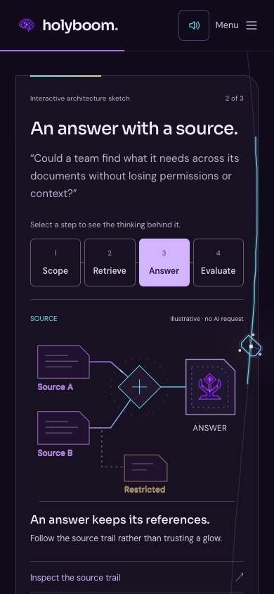
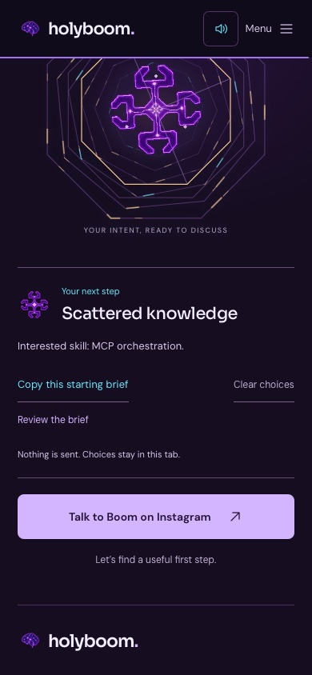

A visible process
Documents connect, permission boundaries remain visible, and an artifact takes shape. Every scenario is an illustrative demonstration, not a running AI service. Approval and missing evidence are not invented.

Choose a challenge, watch the system take shape, and carry a skill into a starting brief at the portal. The scroll story can run backward. Your decisions do not.
Try the workbenchSee the destinationDocuments connect, permission boundaries remain visible, and an artifact takes shape. Every scenario is an illustrative demonstration, not a running AI service. Approval and missing evidence are not invented.

The selected challenge and explicitly carried skill change the portal and its copyable brief. Nothing is submitted. Choices are whitelisted IDs in session storage, with a visible Clear choices control.

Tap to start sound; scroll or use the existing controls. Piano, reactions/fireworks, line energy and atmosphere are independently adjustable. Fine-tune controls start at the previously approved balance.
Recorded fireworks, their long tails, Mozart note order, line-only current and all source artwork are retained. Surface light follows the existing particle/source positions. Under sustained draw cost, only glow raster resolution can change at the next boundary; animation and particle identities remain intact.
Browser automation and touch emulation are not a physical iPhone listening or frame-rate test. The demo does not send information to a model or a server. Clipboard writes occur only when you choose Copy.
Release evidence · Design and limitations · Original audio credits